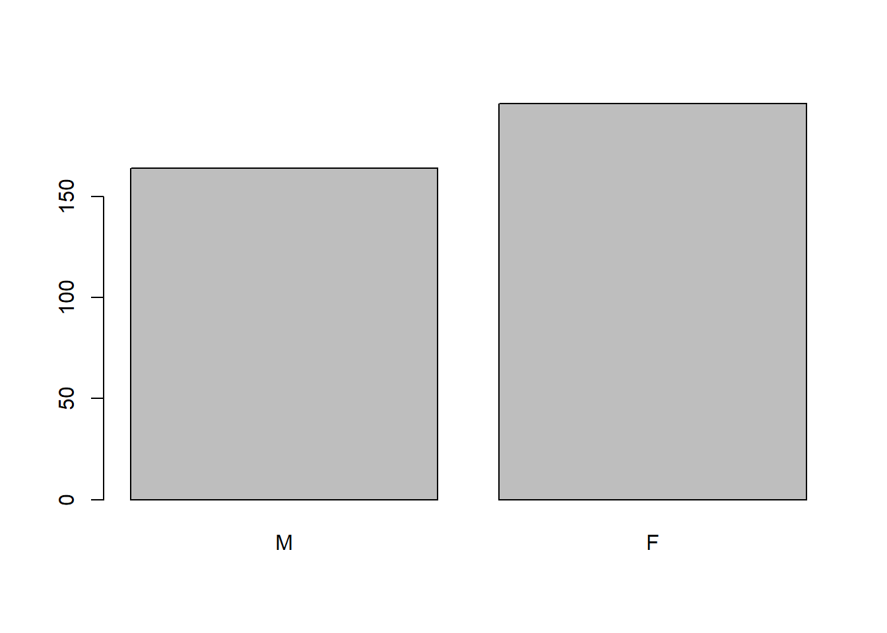

Pràctica 2. Obtenció de dades de RNA-seq pel seu anàlisi
Objectius
En aquesta pràctica es treballaran funcions específiques d’R com:
Importar i exportar fitxers a l’R
Manipular datasets de grans dimensions (dades RNAseq): filtrar per columnes, filtrar per files, unir datasets, etc.
Definir noms de columnes i de files
Estructurar un RMarkdown per generar un fitxer .html amb els resultats desitjats
A més, la pràctica servirà per introduir-se al context de les dades amb les quals es treballarà durant l’assignatura:
Entendre l’estudi d’on provenen les dades
Compendre les variables obtingudes
Formular possibles preguntes de recerca i hipòtesis científiques
1. Estudi d’RNAseq de pacients amb Tuberculosis
1.1 Contextualització del problema científic
En aquestes pràctiques es treballaran dades d’expressió (RNAseq) de pacients amb tuberculosis. Les dades originals s’han extret del treball de Thomson et al. (2017) titulat “Host blood RNA signatures predict the outcome of tuberculosis treatment” [2]
Les dades originals es troben emmagatzemades al repositori GEO amb número d’accés GSE89403. Aquesta pàgina conté informació sobre l’estudi, l’obtenció de les dades i els fitxers amb les dades.
El primer que cal fer és contextualitzar l’objecte d’estudi:
Accedeix a GEO i busca la fitxa de l’estudi (GSE89403)
Llegeix el resum de la fitxa GEO i fes un esquema del disseny de l’experiment.
Hi ha rèpliques biològiques? i tècniques? Quina és la diferència entre aquestes dues?
Busca a la fitxa de GEO la plataforma òmica que han utilitzat per fer l’anàlisi.
1.2. Descarregar dades
Les dades de RNAseq generen una gran quantitat de variables! Per tal de facilitar i agilitzar els anàlisi nosaltres treballarem amb unes dades adaptades de les originals.
Dins de l’apartat de Pràctiques d’R de l’aula virtual trobaras una carpeta, Dades, amb dos fitxers:
practR_metadades.csvFitxer amb variables mèdiques (covariables)practR_rnadata.csvFitxer amb les abundàncies (normalitzades) dels gens
Descarrega’t els dos fitxers (descomprimeix la carpeta si es baixa en una carpeta comprimida) i guarda’ls dins la carpeta amb la qual treballaràs.
2. Treballar les dades amb R
2.1. Introducció a l’RMarkdown
L’RMarkdown és un format de scripts d’R que permet escriure en un únic fitxer de sortida text, codi i resultats del codi. Aquest fitxer de sortida pot ser en format .html, .pdf o word. En aquesta assignatura es realitzaran totes les pràctiques amb RMarkdown i s’entregarà ja sigui l’RMarkdown com el fitxer de sortida (en format .html).
Per generar aquest tipus de fitxer cal obrir un nou fitxer del tipus RMarkdown: File > New File > RMarkdown.
Automàticament s’obre una finestra demanant que s’introdueixi títol, autor i data. Aquests camps es podran modificar un cop creat el fitxer.
Un cop creat el fitxer es recomana guardar-lo a la mateixa carpeta on hi haurà les dades que es treballaran: File > Save As... > Nom_del_fitxer (format .Rmd)
Esctructura de R Markdown
Encapçalament: porta la informació tant del títol i autor del document, com també del format de “output” (de sortia). Per defecte deixarem
output: html_documentText: quan s’escriu directament al document apareixarà com a text
Codi: el codi d’R s’ha d’escriure dins dels “chunks”. Qualsevol cosa que introduim dins del chunk és com si ho fessim en un script d’R. El resultat (output) del codi també apareix directament a sota del chunk:
# Això és un chunck i s'ha d'escriure com si escribissim en un script d'R
# qualsevol text que volguem comentar aquí dins ha de començar per #
summary(cars) # el codi s'escriu com en un script d'R i el resultat d'aquest apareix just a sota## speed dist
## Min. : 4.0 Min. : 2.00
## 1st Qu.:12.0 1st Qu.: 26.00
## Median :15.0 Median : 36.00
## Mean :15.4 Mean : 42.98
## 3rd Qu.:19.0 3rd Qu.: 56.00
## Max. :25.0 Max. :120.00Per inserir un chunk cal: Code > Insert Chunk. O bé Ctrl+Alt+I
Nota: Si vols més informació sobre RMarkdown pots consultar el llibre online “R Markdown Cookbook”[1].
Amb això ara ja podem començar a treballar les dades!
Crea un nou RMarkdown i guarda’l amb el nom de Practica2. Aquest serà el fitxer que contindrà el codi i els comentaris d’aquesta primera pràctica.
2.2. Importar dades a R
Un cop creat el nou RMarkdown, pots eliminar tots els chunks excepte el primer. Ara ja tens el fitxer a punt per començar a treballar.
- Crea un nou chunk i defineix el teu directori de treball (sí, és obligatori!). Hauria de ser una cosa similar a:
- Importa les dades. Fixa’t en el format dels dos fitxer. Fes servir la següent funció:
# carregar dades
metadata <- read.csv2("dades/practR_metadades.csv", dec = ",")
data_raw <- read.csv2("dades/practR_rnadata.csv", dec = ",")Nota: quan segueixis un tutorial és molt important mantenir els noms dels objecte per evitar error inecessaris
2.3. Anàlisi exploratori de la metadada
És molt important conèixer quines mostres estem analitzant, quins grups hi ha, dimensions i característiques d’aquests grups abans de començar a analitzar les dades.
- Quina estuctura té el dataset
metadata? Les variables són les columnes o les files?
## 'data.frame': 360 obs. of 7 variables:
## $ X : chr "mostra1" "mostra2" "mostra3" "mostra4" ...
## $ Tractament: chr "control" "control" "control" "control" ...
## $ Temps : int 0 1 4 24 0 1 4 24 0 1 ...
## $ Individu : int 1 1 1 1 2 2 2 2 3 3 ...
## $ Edat : int 50 50 50 50 34 34 34 34 70 70 ...
## $ Sexe : chr "F" "F" "F" "F" ...
## $ Xpert : num 2.88 7.88 4.09 8.83 9.4 ...- Quines dimensions té
metadata(nombre de files i columnes)?
## [1] 360 7- Imprimeix el nom de les variables
## [1] "X" "Tractament" "Temps" "Individu" "Edat"
## [6] "Sexe" "Xpert"- Tenen el nom correcte les files? Quin hauria de ser el nom de les files?
## [1] "1" "2" "3" "4" "5" "6" "7" "8" "9" "10"Perquè serveix afegir
[1:10]al codi anterior?Defineix el nom de les files amb el respectiu nom de la mostra. Primer has de trobar a quina columna estan definits el nom de les mostres:
## [1] "mostra1" "mostra2" "mostra3" "mostra4" "mostra5" "mostra6"
## [7] "mostra7" "mostra8" "mostra9" "mostra10"rownames(metadata) <- metadata$X # definim el nom de les files (mostres)
metadata <- metadata[,-1] #eliminem columnes inecessàries- Converteix a factor les variables
Tractament,Temps,IndividuiSexe.
metadata$Individu <- factor(metadata$Individu)
metadata$Temps <- factor(metadata$Temps, levels = c(0, 1, 4, 24), labels = c("basal", "1set", "4set", "24set"))
metadata$Sexe <- factor(metadata$Sexe)Comprova que l’estructura de
metadatasigui correcte ara.Descriu les diferents categories de cada factor (
Tractament,Temps,IndividuiSexe).Canvia l’ordre de les categories del factor
Sexe(primer M i després F). Després de canviar l’ordre, la funciótable()ens permet visualitzar l’ordre de les categories. Això és molt útil per quan volem visualitzar la variable.
##
## F M
## 196 164metadata$Sexe <- factor(metadata$Sexe, levels = c("M", "F")) # mitjançant "levels" definim l'odre de les categories
table(metadata$Sexe) # comprovem si s'ha guardat l'ordre correcte##
## M F
## 164 196- Quan visualitzem la taula amb un gràfic de barres, l’odre de les etiquetes correspon a l’ordre de les columnes:

Torna a canviar l’ordre (primer F i després M) i representa-ho amb un gràfic de barres.
a) Anàlisi descriptiu univariant
Variables Numèriques
Primer farem un anàlisi descriptiu (gràfic i numèric) de les variables numèriques.
Quines són les variables numèriques dins de
metadata? Defineix-les. Si cal, busca informació adicional per entendre de quines variables es tracta.Fes un resum numèric de la variable
Edat.
## Min. 1st Qu. Median Mean 3rd Qu. Max.
## 22.00 34.00 48.00 49.38 62.00 79.00- Fes un gràfic per resumir la variable
Edat. Quin gràfic genera la funcióhist()?

Fes un resum numèric i un gràfic de la variable Xpert
Variables Categòriques
Resumeix numèricament (taula de freqüències) i gràficament (gràfic de barres) cada una de les variables categòriques per separat: Sexe i Tractament
b) Anàlisi descriptiu bivariant
Podria ser que algunes d’aquestes variables estiguessin relacionades. Ara explora la relació entre elles.
Concretament, descriu la relació del
TractamentambSexenumèricament. Fes també un gràfic per visualitzar la relació.Descriu la relació del
TractamentambEdatamb un gràfic.Descriu la relació del
TractamentambXpertamb un gràfic. Calcula també els estadístics descriptius més interessants (numèric).Escriu una petita conclusió dels resultats de l’anàlisi exploratòria (uni i bivariant)
2.4. Anàlisi exploratori de les abundàncies gèniques
Ara comencem a analitzar la taula d’abundàncies dels gens seqüenciats (data_raw).
- Quina és l’estructura del dataset
data_raw. Quants gens hi ha? Totes les columnes dedata_rawcorresponen a un gen?
a) Posada a punt de la taula d’abundàncies
Extreu el nom de les mostres. Crea una còpia del dataset (anomenat
data0) i defineix el nom de les files corresponents a cada mostra (pensa en eliminar columnes inecessàries al final).Imprimeix (visualitza) les abundàncies dels 7 primers gens en les 5 primeres mostres (de l’objecte
data0)Extreu el nom dels gens i guarda’ls en un vector que anomenaràs
gene_names. Mostra el nom del gen 23, 24 i 38 (fes-ho amb una única línia de codi).
- Pots comprovar si tots els gens són presents a totes les mostres? Hi ha algun gen que no s’hagi detectat a cap mostra?
# Detectem els gens que no estiguin presents a cap mostra
zero_rm <- which(colSums(data0) == 0)
length(zero_rm) # quants n'hi ha?## [1] 3- Elimina aquells gens que no hagin set detectats en cap mostra. Per fer-ho crea un nou dataset anomenat
datasense les columnes identificades al codi anterior (dins del vectorzero_rm).
b) Explorar la distribució de les abundàncies
A partir d’ara ja podem treballar amb el dataset data. Hem vist que la majoria de gens (variables) d’RNAseq tenen una distribució amb una cua a la dreta.
Visualitza la distribució del Gen_1 (tingues en compte quin tipus de variable és i, per tant, quin gràfic representa millor la seva distribució). Et sembla que té una distribució normal?
Realitza un test estadístic per comprovar si realment té o no una distribució normal. Explica el resultat del test
Pots extreure’n només el p.value?
## [1] 5.235803e-21
Visualitza la distribució del Gen 15 i comprova si segueix una distribució normal.
- Ara crearem una funció per comprovar la normalitat de tots els gens del dataset. Ho farem amb la funció
applyde la següent manera:
# Normalitat de tots els gens (funció apply)
normality.test<-apply(data, 2, function(x) shapiro.test(x)$p.value)
head(normality.test)## Gen_1 Gen_2 Gen_3 Gen_4 Gen_5 Gen_6
## 5.235803e-21 1.720053e-19 5.303406e-01 1.126407e-06 8.471637e-22 7.856582e-09Explica amb les teves paraules els arguments de dins la funció apply (pots ajudar-te del “help”)
- Quants gens segueixen una distribució normal (defineix el llindar de significació a 0.05)?
3. Exportar les dades creades
Arribats en aquest punt, necessitem guardar el nou dataset data el qual hem filtrat aquells absents a totes les mostres. Pots exportar el dataset en forma de fitxer de test .csv de la següent manera:
write.csv2(data, "practR_rnadata_filt.csv")Bibliografia
Yihui Xie, Christophe Dervieux, Emily Riederer (2024) R Markdown Cookbook. Online version from https://bookdown.org/yihui/rmarkdown-cookbook/
Ethan G. Thompson, et al. (2017) Host blood RNA signatures predict the outcome of tuberculosis treatment, Tuberculosis, Volume 107 (48-58) ISSN 1472-9792 https://doi.org/10.1016/j.tube.2017.08.004.